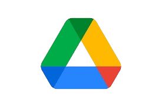

A showcase of selected works that reflect my passion for technology, design, and problem-solving.

Sustainable living product design with eco-conscious branding.
Smart collaboration tool designed for remote teams.
Donation app focused on food redistribution and zero waste.

Revamp of e-government service portal to improve UX.

Transform the application interface to make it more responsive and user-friendly.
Development of service application design based on user needs to be more practical and engaging.

Analysis of potential strategic cooperation with Metro Jabar Trans to support the integration of digital transportation services in West Java.

Technical review of the most effective and efficient technologies for Android app development.

Research on the implementation of artificial intelligence in software development and code writing.

Analyze an AI risk management framework based on NIST standards to ensure security, transparency, and accountability in AI development.

Review the literature on the Proxy Mean Test (PMT) which discusses the application of this method in statistical research to compare means using proxy data to overcome the limitations of the original data.
This study analyzes postpartum maternal health by age across regions using a partitional algorithm to identify patterns and data segmentation.
